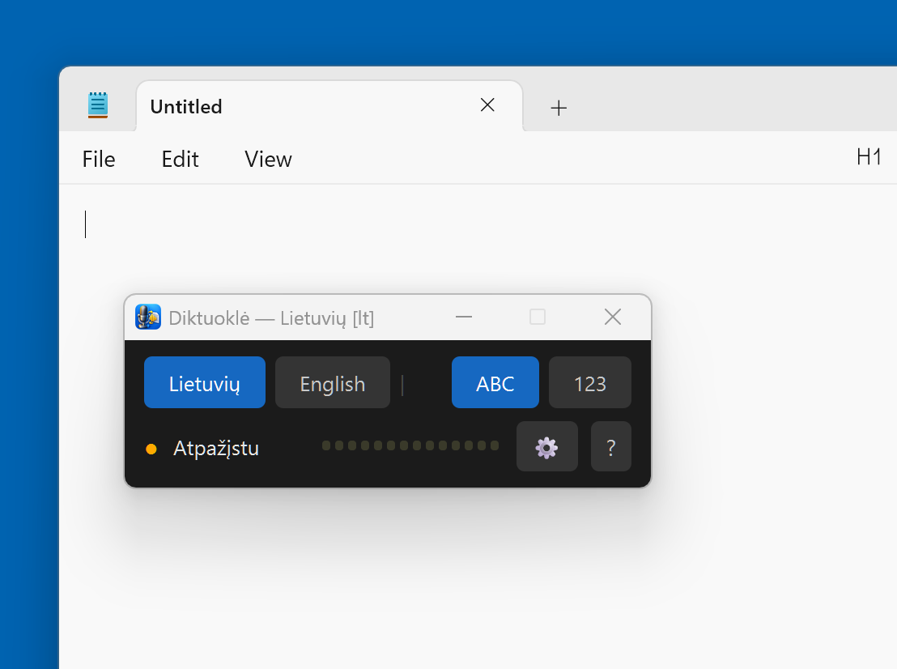
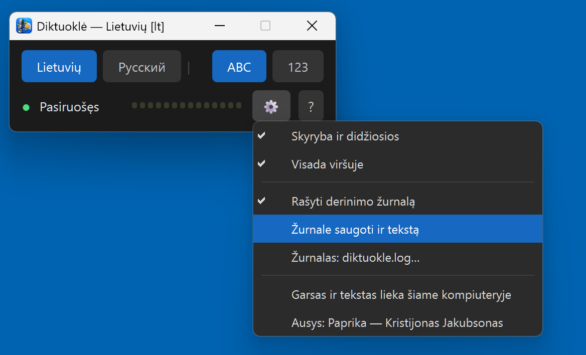
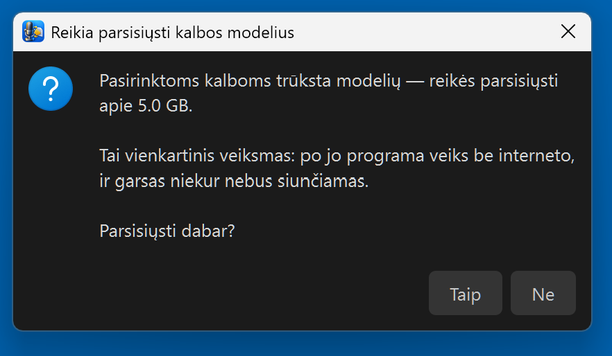
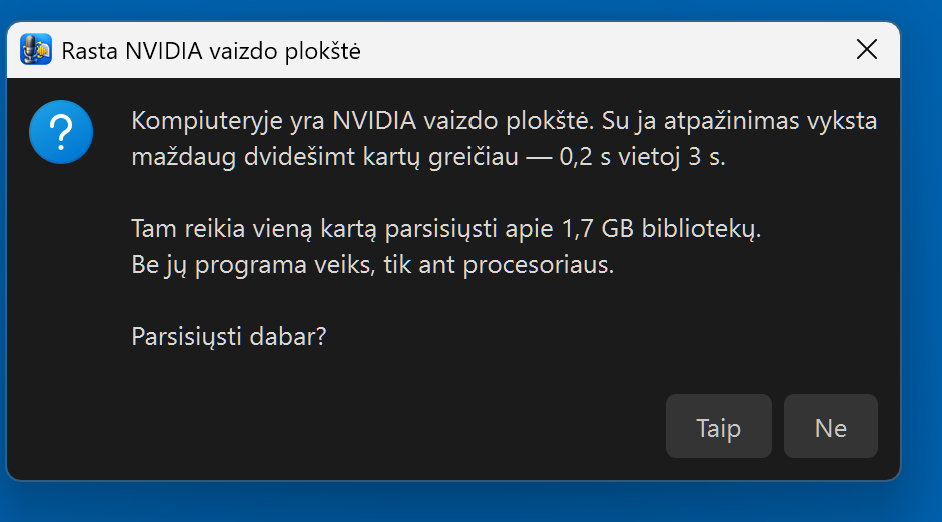
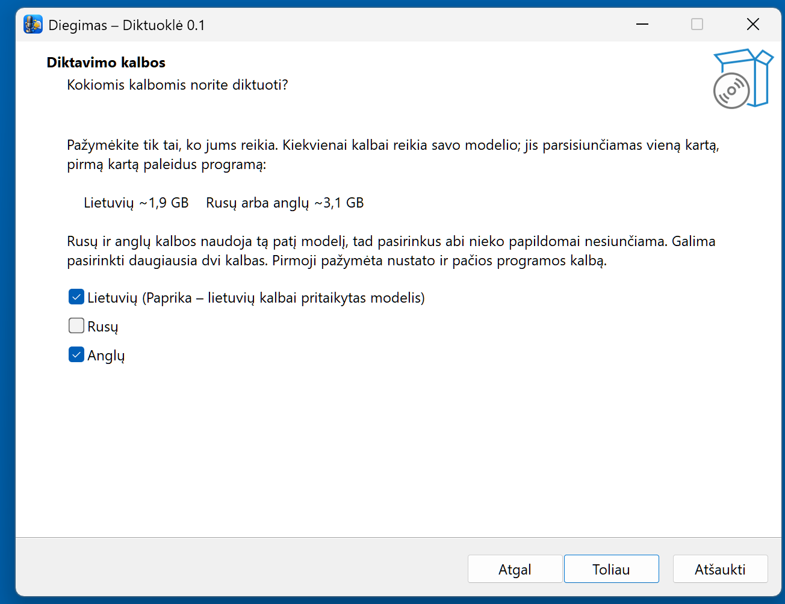

Lietuviškas diktavimas balsu be interneto.
Laikai Ctrl, kalbi — tekstas atsiranda. Tavo kompiuteryje, nemokamai.
In English: README_EN.md
Word, naršyklė, susirašinėjimas, buhalterinė programa — tekstas atsiranda ten, kur mirksi žymeklis. Laikai dešinį Ctrl ir kalbi, paleidai — įrašyta.
Kalbos atpažinimas sukasi tavo kompiuteryje. Garsas ir tekstas iš jo neišeina niekada. Jokių paskyrų, jokio mėnesinio mokesčio, jokio necenzūrinių žodžių filtro.
Lietuvių kalbą atpažįsta Paprika — Kristijono Jakubsono modelis, mokytas iš 3 281 val. lietuviškos šnekos. Bendrasis Whisper daro 26 % žodžių klaidų, Paprika — 7,6 % (savoje srityje).
„Labas, aš esu diktuoklė, jūsų pagalbininkas" — kablelis ir didžioji raidė sudėti automatiškai. Skaičiai su lietuviškais linksniais: „penkių lentų po aštuoniolika milimetrų" → 5 lentų po 18 mm.
Diegiant renkiesi iki dviejų kalbų. Laikydamas Ctrl spusteli → ir kalbi kita kalba nekeldamas piršto.
Turi NVIDIA? Programa ją aptinka pati ir pasiūlo parsisiųsti bibliotekas — tada sakinys atpažįstamas per 0,2 s. Be plokštės — apie 3 s, ant procesoriaus.




Instaliatorius mažas (~180 MB). Modeliai parsisiunčiami pirmą kartą paleidus, tik pasirinktoms kalboms:
| Pasirinkta | Parsisiųs |
|---|---|
| tik lietuvių | ~1,9 GB |
| tik rusų arba tik anglų | ~3,1 GB |
| lietuvių + rusų ar anglų | ~5 GB |
| rusų + anglų | ~3,1 GB — tas pats modelis abiem |
Programa paklaus prieš siųsdama. Būsenoje rašys „Siunčiu…" kelias–dešimt minučių, paskui „Kraunu…", paskui „Pasiruošęs". Tai vienkartinis veiksmas — toliau internetas nereikalingas.
Windows parodys mėlyną langą „Windows protected your PC". Programa neturi mokamo kodo parašo — tai ne virusas. Spausk „More info" → „Run anyway". Failo sha256 suma yra Release puslapyje šalia failo.
Šios programos širdis nėra mūsų. Lietuvišką šneką atpažįsta Paprika — Kristijono Jakubsono whisper-large-v3-turbo pritaikymas lietuvių kalbai, mokytas iš LIEPA-3 garsyno. Skyrybą ir didžiąsias sudeda jo paties punct_restore. Abu jis paskelbė atvirai — todėl ši programa apskritai galėjo atsirasti. Mes sudėjom aplink jo darbą langą, klavišus, skaičių tvarkymą ir diegimą.
Pamatuota mūsų stende: bendrasis Whisper lietuviškai — 25,95 % žodžių klaidų, Paprika — 7,63 %. Testo aibė kilusi iš LIEPOS, tad Paprikai tai sava sritis; jo paties kortelė sako, kad svetimai sričiai teisingo skaičiaus nėra.
Garsas ir tekstas iš kompiuterio neišeina niekada. Internetas reikalingas du kartus: parsisiųsti programą ir pirmą kartą — modelius. Po to gali ištraukti kabelį. Žurnalo programa nerašo, nebent pats įjungsi — nes jame būtų pats padiktuotas tekstas, o tai tavo laiškai, ne mūsų reikalas.
Ne programuotojas? Programoje spausk „?" → „Neradote atsakymo? Klauskite DI" — atsidarys pokalbis su asistentu, kuris jau bus gavęs autoriaus instruktažą apie šią programą: ko paklausti, ko negalima teigti, kokie gedimai kaip atrodo. Klausk savo žodžiais, lietuviškai.
Arba įklijuok į bet kurį DI pokalbį: Perskaityk https://raw.githubusercontent.com/RobertasTa/diktuokle/main/AI_CONSULTANT_BRIEF.md ir padėk man su Diktuokle.
Kristijonui Jakubsonui — už ausis ir už tai, kad paskelbė jas atvirai. Tai jo darbas, ne mūsų.
Vilniaus universitetui ir LIEPA-3 komandai — už garsyną. SYSTRAN už faster-whisper, OpenAI už Whisper, 1-800-BAD-CODE už skyrybos modelį, jrsoftware už Inno Setup — kuriam lietuvių kalbos nebuvo, tad parašėm patys.
Diktuoklė yra ausys; Reginutė — burna. Kartu jie yra lietuviškai kalbantis kompiuteris be interneto.